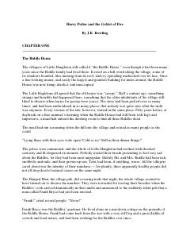

HPGarri Potter sehrgarlar turnirida qatnashib, qorong'u kuchlarga qarshi kurashadi.
Garri Potterning sehrgarlar maktabidagi to'rtinchi yili bo'lib, u kutilmaganda xavfli 'Uch sehrgar turniri'ga jalb qilinadi. Ushbu qismda qorong'u kuchlarning qaytishi va Garri duch keladigan yangi sinovlar tasvirlanadi.